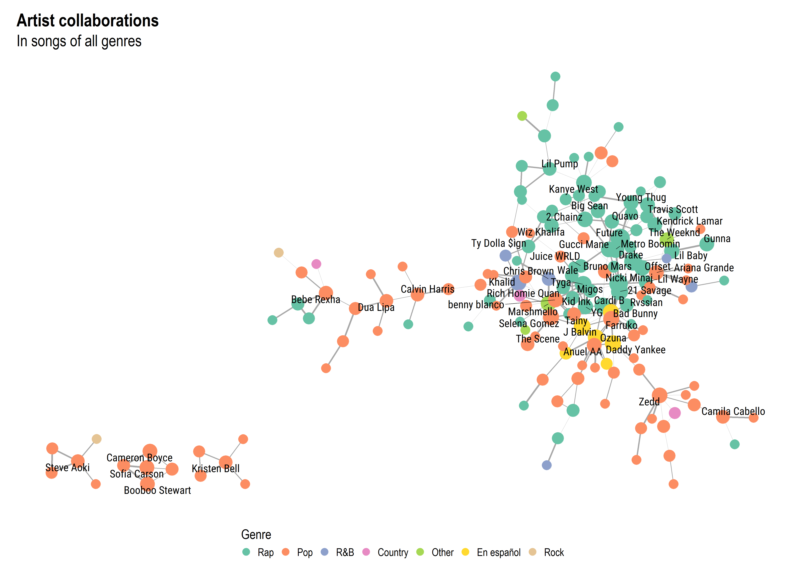
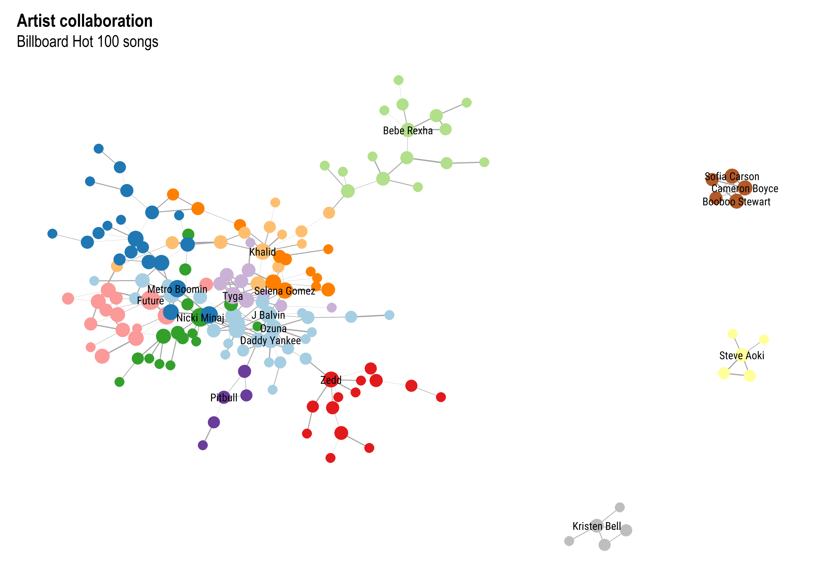

Artist Collaboration in Billboard Hot 100
Data
Data on Songs from Billboard 1999-2019 from kaggle.
Info about each Hot 100 entry with variables such as:
• Song
• Artist
• Genre
• Weekly rank
• Weeks on chartCreating the graph
Data is filtered to only include songs with multiple artists. Only songs from 2010 onwards are selected. Each artists gets assigned a genre by finding the most common genre of the songs they appear on. So your favorite indie band might be classified as “pop” is their only song that charted is a pop song. Artist are obviously the nodes and the collaborations on the songs between artsits make up the edges. Edges weights are taken from the highest charting position (higher charting position = bigger edge weight).
library(tidygraph)
library(ggraph)
library(tidyverse)
library(gtools)
library(hrbrthemes)
library(lubridate)
library(igraph)
library(RColorBrewer)
library(here)
# Reading-in and cleaning data
x <- read_csv(here("data/input/billboardHot100_1999-2019.csv"))
y <- x %>%
distinct(Artists, Name, .keep_all = TRUE) %>%
filter(year(Week) > 2010) %>%
filter(Artists != "Jack, Jack") %>%
mutate(
Artists = str_replace(Artists, "Tyler, The Creator", "Tyler The Creator"),
Genre = str_replace(Genre, "Hip-Hop", "Rap"),
Genre = str_replace(Genre, "R&;B", "R&B"),
list_of_artists = str_split(Artists, ", "),
list_of_genres = str_split(Genre, ",")
) %>%
replace_na(list(Peak.position = -1)) %>%
mutate(
Peak.position = if_else(Peak.position == -1, Weekly.rank, Peak.position),
weight = 100 - Peak.position
)
# Assigning a genre to an artist based on the genre of the songs they appear on
artists <- distinct(as_tibble(unlist(y$list_of_artists)))
genres <- unnest(y, col = list_of_genres) %>%
count(list_of_genres) %>%
arrange(desc(n))
genres <- genres$list_of_genres
artist_genre <- unnest_longer(y, col = list_of_genres) %>%
unnest_longer(col = list_of_artists) %>%
group_by(list_of_artists, list_of_genres) %>%
count() %>%
ungroup() %>%
group_by(list_of_artists) %>%
slice_max(n, n = 1) %>%
arrange(factor(list_of_genres, levels = genres)) %>%
slice_head(n = 1)
artist_genre$list_of_genres <- fct_lump_n(artist_genre$list_of_genres, 6)
artists <- left_join(artists, artist_genre, c("value" = "list_of_artists"))
artists <- artists[1:2]
artists$list_of_genres <- fct_recode(artists$list_of_genres,"En español" = "En Espa\\xc3\\xb1ol")
# Constructing the graph
y <- y %>% filter(lengths(list_of_artists) > 1)
weights <- map2(y$weight, y$list_of_artists, ~ rep(.x, choose(length(.y), 2)))
name <- map2(y$Name, y$list_of_artists, ~ rep(.x, choose(length(.y), 2)))
genre <- map2(y$Genre, y$list_of_artists, ~ rep(.x, choose(length(.y), 2)))
edges <- map(y$list_of_artists, ~ combinations(length(.x), 2, .x))
edges <- reduce(edges, rbind)
edges <- as_tibble(edges)
edges$weights <- reduce(weights, c)
edges$Name <- reduce(name, c)
edges$Genre <- reduce(genre,c)
graph <- tbl_graph(nodes = artists,
edges = edges,
node_key = c("V1", "V2"),
directed = F)
graph <- discard(to_components(graph), ~ gorder(.x) < 5) %>%
bind_graphs() %>%
activate(nodes) %>%
mutate(
degr = centrality_degree(),
degr_weighted = centrality_degree(weights = weights)
)
# Saving the graph
saveRDS(graph,file=here("data/output/graph.RDS"))Graph analysis
# Graph analysis
as_tibble(graph) %>% slice_max(degr,n=5) %>% knitr::kable(col.names=c("Artist","Genre","Degree","Weighted degree"))| Artist | Genre | Degree | Weighted degree |
|---|---|---|---|
| Future | Rap | 19 | 810 |
| Nicki Minaj | Rap | 16 | 899 |
| Drake | Rap | 14 | 690 |
| 21 Savage | Rap | 12 | 425 |
| Metro Boomin | Rap | 12 | 465 |
as_tibble(graph) %>% slice_max(degr_weighted, n=5) %>% knitr::kable(col.names=c("Artist","Genre","Degree","Weighted degree"))| Artist | Genre | Degree | Weighted degree |
|---|---|---|---|
| Nicki Minaj | Rap | 16 | 899 |
| Future | Rap | 19 | 810 |
| Cardi B | Rap | 9 | 749 |
| Drake | Rap | 14 | 690 |
| Kanye West | Rap | 8 | 665 |
As we can see Future, Nicki Minaj, and Drake are some of the most profilic collaborators on the charts. We get a similar view if weighting songs by the their highest charting position too.
Potentially to do
- Edge betweenness centrality (finding the most ‘influential’ song)
- Calculating connectivity and finding the songs, which when removed disconnect the biggest component.
- Since only songs from 2010 onwards were analysed compare the graph to past past trends (were there less collaborations in the previous decades?).
- Highlight and plot the diameter of the graph
- Select only songs charting #1 (or maybe only in the top 10) and create a graph of them.
- Create a Shiny app that allow to select and artist to center on and plot.
- Create a Shiny app to shiny select artists to find paths between them.
- Calculate transitivity (artists whose collabs also collaborate with each other).
- Calculate Node similarity (finding artist with similar collaboration patterns).
Visualising the graph
All genres
# Function to plot the graph
plot_graph <- function(graph, plot_subtitle) {
ggraph(graph) +
geom_edge_link0(aes(width = 100 - weights),
edge_colour = "grey66",
show.legend = FALSE) +
geom_node_point(aes(size = degr,
color = list_of_genres)) +
geom_node_text(aes(filter = (degr > 3),
label = value),
family = "Roboto Condensed", repel = TRUE, size = 8.5
) +
theme_graph(base_size = 30,
title_size = 40,
subtitle_size = 36) +
scale_size(range = c(10, 20)) +
scale_edge_width_continuous(range = c(0.1, 2)) +
scale_color_brewer(
"Genre",
palette = "Set2",
limits = unique(artists$list_of_genres),
guide = guide_legend(
override.aes = list(size = 8),
nrow = 1, title.position = "top"
)
) +
guides(size = "none") +
theme(legend.position = "bottom") +
labs(title = "Artist collaborations",
subtitle = plot_subtitle)
}As we can see the ‘big’ component is made up of mostly pop or rap songs
plot_graph(graph,"In songs of all genres")
Pop songs
Since pop (together with rap) are the most popular genres, the graph is filtered to only include pop songs.
# Filtering out only a single genre
subset_genre <- function(graph, genre_filter) {
graph <- graph %>%
activate(edges) %>%
filter(str_detect(Genre, genre_filter))
graph <- discard(to_components(graph), ~ gorder(.x) < 5) %>%
bind_graphs()
graph
}
plot_graph(subset_genre(graph,"Pop"),"In pop songs only") Rap songs
The same thing is done for rap songs.
plot_graph(subset_genre(graph,"Hip-Hop|Rap|Trap"),"In rap songs only")
Visualising clusters
Instead of coloring nodes by the artist’s genre, using an algorithm to assign a group to an node. In this case 13 distinct groups are calculated.
# Calculate the clusters
graph <- graph %>%
mutate(clust = as_factor(tidygraph::group_louvain(weights = weights))) %>%
morph(to_split, clust) %>%
activate(nodes) %>%
mutate(main = ifelse(centrality_degree() > max(centrality_degree())-1, value, "")) %>%
unmorph()
myColors <- c(brewer.pal(13, "Paired"), "grey")
names(myColors) <- levels(as_tibble(graph)$clust)
ggraph(graph, layout = "kk") +
geom_edge_link0(aes(width = 100 - weights), edge_colour = "grey66") +
geom_node_point(aes(size = degr, color = clust)) +
geom_node_text(aes(label = main), family = "Roboto Condensed", repel = FALSE, size = 8.5) +
theme_graph(base_size = 30, title_size = 40, subtitle_size = 36) +
scale_size(range = c(10, 20)) +
scale_edge_width_continuous(range = c(0.1, 1.5)) +
scale_color_manual(values = myColors) +
theme(legend.position = "none") +
labs(title = "Artist collaboration", subtitle = "Billboard Hot 100 songs")
plot_clusters <- function(graph, xlimit, ylimit, groups) {
ggraph(graph, layout = "kk") +
geom_edge_link0(aes(width = 100 - weights), edge_colour = "grey66") +
geom_node_text(aes(filter = as.numeric(clust) %in% groups, label = value),
family = "Roboto Condensed", repel = TRUE, size = 8.5) +
geom_node_point(aes(filter = as.numeric(clust) %in% groups, size = degr, color = clust)) +
geom_node_point(aes(filter=!(as.numeric(clust) %in% groups),size=degr),
alpha=0.5,color="grey") +
theme_graph(base_size = 30, title_size = 40, subtitle_size = 36) +
scale_size(range = c(10, 20)) +
scale_edge_width_continuous(range = c(0.1, 1.5)) +
scale_color_manual(values = myColors) +
theme(legend.position = "none") +
labs(title = "Artist collaboration", subtitle = "Billboard Hot 100 songs") +
xlim(xlimit) +
ylim(ylimit)
}Zooming in on parts of the graph to easier see the clusters.
plot_clusters(graph,c(-4,3),c(0,8),c(1:13))plot_clusters(graph,c(0,6),c(-4,3),c(1:13))plot_clusters(graph,c(-3,2),c(-5,0.5),c(1:13))Session info
devtools::session_info()## - Session info ---------------------------------------------------------------
## setting value
## version R version 4.1.0 (2021-05-18)
## os Windows 10 x64
## system x86_64, mingw32
## ui RTerm
## language (EN)
## collate Lithuanian_Lithuania.1257
## ctype Lithuanian_Lithuania.1257
## tz Europe/Helsinki
## date 2021-09-05
##
## - Packages -------------------------------------------------------------------
## package * version date lib source
## assertthat 0.2.1 2019-03-21 [1] CRAN (R 4.0.2)
## backports 1.2.1 2020-12-09 [1] CRAN (R 4.1.0)
## bit 4.0.4 2020-08-04 [1] CRAN (R 4.0.3)
## bit64 4.0.5 2020-08-30 [1] CRAN (R 4.0.3)
## broom 0.7.8 2021-06-24 [1] CRAN (R 4.1.0)
## bslib 0.2.5.1 2021-05-18 [1] CRAN (R 4.0.5)
## cachem 1.0.5 2021-05-15 [1] CRAN (R 4.1.0)
## callr 3.7.0 2021-04-20 [1] CRAN (R 4.1.0)
## cellranger 1.1.0 2016-07-27 [1] CRAN (R 4.0.2)
## cli 3.0.1 2021-07-17 [1] CRAN (R 4.0.5)
## colorspace 2.0-2 2021-06-24 [1] CRAN (R 4.1.0)
## crayon 1.4.1 2021-02-08 [1] CRAN (R 4.0.5)
## DBI 1.1.1 2021-01-15 [1] CRAN (R 4.1.0)
## dbplyr 2.1.1 2021-04-06 [1] CRAN (R 4.1.0)
## desc 1.3.0 2021-03-05 [1] CRAN (R 4.1.0)
## devtools 2.4.2 2021-06-07 [1] CRAN (R 4.1.0)
## digest 0.6.27 2020-10-24 [1] CRAN (R 4.0.5)
## dplyr * 1.0.7 2021-06-18 [1] CRAN (R 4.0.5)
## ellipsis 0.3.2 2021-04-29 [1] CRAN (R 4.0.5)
## evaluate 0.14 2019-05-28 [1] CRAN (R 4.0.2)
## extrafont 0.17 2014-12-08 [1] CRAN (R 4.0.0)
## extrafontdb 1.0 2012-06-11 [1] CRAN (R 4.0.3)
## fansi 0.5.0 2021-05-25 [1] CRAN (R 4.0.5)
## farver 2.1.0 2021-02-28 [1] CRAN (R 4.1.0)
## fastmap 1.1.0 2021-01-25 [1] CRAN (R 4.1.0)
## forcats * 0.5.1 2021-01-27 [1] CRAN (R 4.1.0)
## fs 1.5.0 2020-07-31 [1] CRAN (R 4.0.2)
## gdtools 0.2.3 2021-01-06 [1] CRAN (R 4.1.0)
## generics 0.1.0 2020-10-31 [1] CRAN (R 4.0.3)
## ggforce 0.3.3 2021-03-05 [1] CRAN (R 4.1.0)
## ggplot2 * 3.3.5 2021-06-25 [1] CRAN (R 4.1.0)
## ggraph * 2.0.5 2021-02-23 [1] CRAN (R 4.1.0)
## ggrepel 0.9.1 2021-01-15 [1] CRAN (R 4.0.3)
## glue 1.4.2 2020-08-27 [1] CRAN (R 4.0.2)
## graphlayouts 0.7.1 2020-10-26 [1] CRAN (R 4.0.3)
## gridExtra 2.3 2017-09-09 [1] CRAN (R 4.0.2)
## gtable 0.3.0 2019-03-25 [1] CRAN (R 4.0.2)
## gtools * 3.9.2 2021-06-06 [1] CRAN (R 4.1.0)
## haven 2.4.1 2021-04-23 [1] CRAN (R 4.1.0)
## here * 1.0.1 2020-12-13 [1] CRAN (R 4.1.0)
## highr 0.9 2021-04-16 [1] CRAN (R 4.0.5)
## hms 1.1.0 2021-05-17 [1] CRAN (R 4.0.5)
## hrbrthemes * 0.8.0 2020-03-06 [1] CRAN (R 4.0.2)
## htmltools 0.5.1.1 2021-01-22 [1] CRAN (R 4.0.3)
## httr 1.4.2 2020-07-20 [1] CRAN (R 4.0.2)
## igraph * 1.2.6 2020-10-06 [1] CRAN (R 4.0.3)
## jquerylib 0.1.4 2021-04-26 [1] CRAN (R 4.1.0)
## jsonlite 1.7.2 2020-12-09 [1] CRAN (R 4.0.5)
## knitr 1.33 2021-04-24 [1] CRAN (R 4.0.5)
## labeling 0.4.2 2020-10-20 [1] CRAN (R 4.1.0)
## lifecycle 1.0.0 2021-02-15 [1] CRAN (R 4.0.5)
## lubridate * 1.7.10 2021-02-26 [1] CRAN (R 4.1.0)
## magrittr 2.0.1 2020-11-17 [1] CRAN (R 4.0.3)
## MASS 7.3-54 2021-05-03 [2] CRAN (R 4.1.0)
## memoise 2.0.0 2021-01-26 [1] CRAN (R 4.1.0)
## modelr 0.1.8 2020-05-19 [1] CRAN (R 4.0.2)
## munsell 0.5.0 2018-06-12 [1] CRAN (R 4.0.2)
## pillar 1.6.2 2021-07-29 [1] CRAN (R 4.1.0)
## pkgbuild 1.2.0 2020-12-15 [1] CRAN (R 4.1.0)
## pkgconfig 2.0.3 2019-09-22 [1] CRAN (R 4.0.2)
## pkgload 1.2.1 2021-04-06 [1] CRAN (R 4.1.0)
## polyclip 1.10-0 2019-03-14 [1] CRAN (R 4.0.3)
## prettyunits 1.1.1 2020-01-24 [1] CRAN (R 4.0.2)
## processx 3.5.2 2021-04-30 [1] CRAN (R 4.1.0)
## ps 1.6.0 2021-02-28 [1] CRAN (R 4.1.0)
## purrr * 0.3.4 2020-04-17 [1] CRAN (R 4.0.2)
## R6 2.5.0 2020-10-28 [1] CRAN (R 4.0.5)
## RColorBrewer * 1.1-2 2014-12-07 [1] CRAN (R 4.0.0)
## Rcpp 1.0.7 2021-07-07 [1] CRAN (R 4.0.5)
## readr * 2.0.0 2021-07-20 [1] CRAN (R 4.0.5)
## readxl 1.3.1 2019-03-13 [1] CRAN (R 4.0.2)
## remotes 2.4.0 2021-06-02 [1] CRAN (R 4.1.0)
## reprex 2.0.0 2021-04-02 [1] CRAN (R 4.1.0)
## rlang 0.4.11 2021-04-30 [1] CRAN (R 4.0.5)
## rmarkdown 2.9 2021-06-15 [1] CRAN (R 4.0.5)
## rprojroot 2.0.2 2020-11-15 [1] CRAN (R 4.1.0)
## rstudioapi 0.13 2020-11-12 [1] CRAN (R 4.0.3)
## Rttf2pt1 1.3.9 2021-07-22 [1] CRAN (R 4.1.0)
## rvest 1.0.1 2021-07-26 [1] CRAN (R 4.1.0)
## sass 0.4.0 2021-05-12 [1] CRAN (R 4.0.5)
## scales 1.1.1 2020-05-11 [1] CRAN (R 4.0.2)
## sessioninfo 1.1.1 2018-11-05 [1] CRAN (R 4.0.3)
## stringi 1.7.3 2021-07-16 [1] CRAN (R 4.1.0)
## stringr * 1.4.0 2019-02-10 [1] CRAN (R 4.0.5)
## systemfonts 1.0.2 2021-05-11 [1] CRAN (R 4.1.0)
## testthat 3.0.4 2021-07-01 [1] CRAN (R 4.1.0)
## tibble * 3.1.3 2021-07-23 [1] CRAN (R 4.1.0)
## tidygraph * 1.2.0 2020-05-12 [1] CRAN (R 4.0.3)
## tidyr * 1.1.3 2021-03-03 [1] CRAN (R 4.1.0)
## tidyselect 1.1.1 2021-04-30 [1] CRAN (R 4.0.5)
## tidyverse * 1.3.1 2021-04-15 [1] CRAN (R 4.1.0)
## tweenr 1.0.2 2021-03-23 [1] CRAN (R 4.1.0)
## tzdb 0.1.2 2021-07-20 [1] CRAN (R 4.0.5)
## usethis 2.0.1 2021-02-10 [1] CRAN (R 4.0.5)
## utf8 1.2.2 2021-07-24 [1] CRAN (R 4.1.0)
## vctrs 0.3.8 2021-04-29 [1] CRAN (R 4.0.5)
## viridis 0.6.1 2021-05-11 [1] CRAN (R 4.1.0)
## viridisLite 0.4.0 2021-04-13 [1] CRAN (R 4.1.0)
## vroom 1.5.3 2021-07-14 [1] CRAN (R 4.0.5)
## withr 2.4.2 2021-04-18 [1] CRAN (R 4.1.0)
## xfun 0.24 2021-06-15 [1] CRAN (R 4.0.5)
## xml2 1.3.2 2020-04-23 [1] CRAN (R 4.0.3)
## yaml 2.2.1 2020-02-01 [1] CRAN (R 4.0.2)
##
## [1] C:/Users/dovyd/Documents/R/win-library/4.1
## [2] C:/Program Files/R/R-4.1.0/library